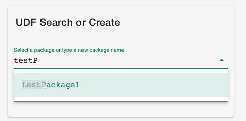
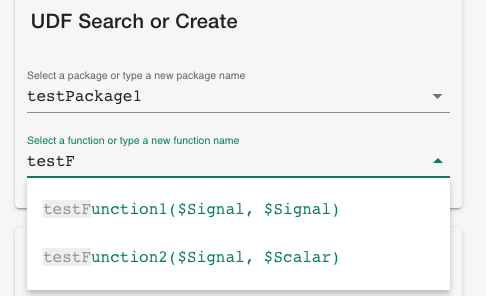
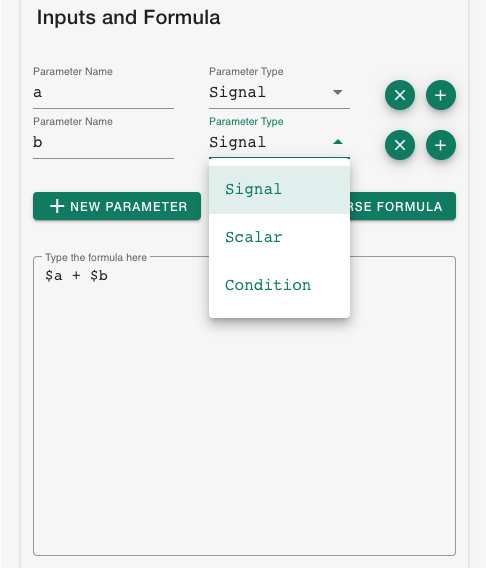
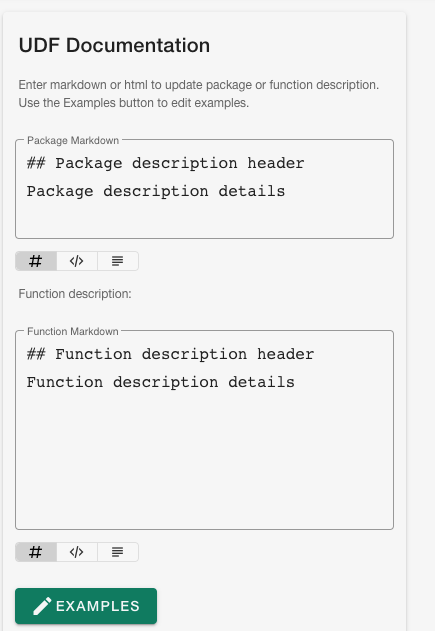
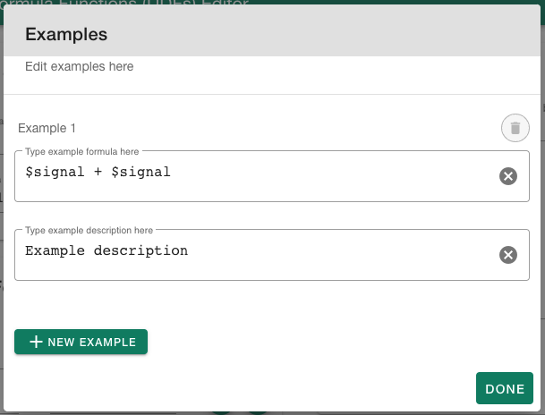
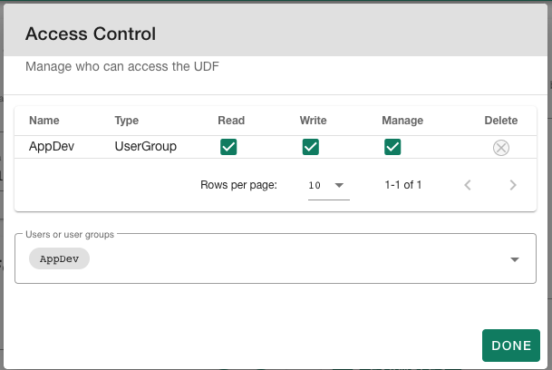
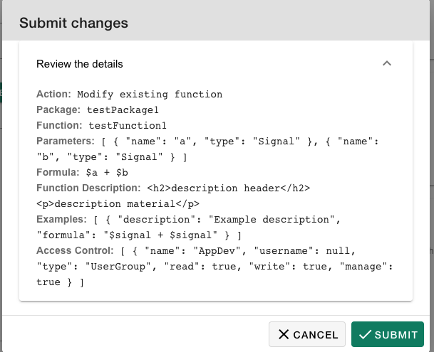
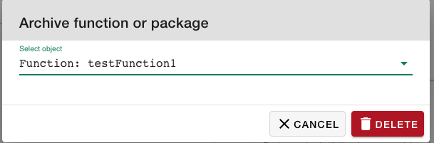

User Guide
A general overview of the motivation for and functionality of the Seeq UDF Editor, as implemented in seeq-udf-ui is provided in this section.
Motivation
The Seeq Formula Tool is part of Seeq core product that allows the user to use a rich library of formulas including mathematical, statistics, and special purpose thermodynamic and fluid mechanic relationships. The Formula Tool also allows the user to customize the formula to their application but it doesn’t allow them to save the custom formula. To do so, user-defined formula functions (UDFs) are provided in Seeq. UDFs are not bound to any signal and allow the users to create their own custom formula function, save them for future use and apply them to various assets. The current limitation is that creating UDFs requires familiarity with the Seeq API and/or Python sdk. UDFs are objects with various attributes such as examples, description, access control, etc. and to create a UDF, these properties have to be set through the appropriate API calls. The UDF Editor tool provides a UI and creates the API calls in the backend so that creating and modifying UDFs is easier for the user.
Usage
User Define Function Add-on Usage
Step 1 - UDF Search or Create
Under packages, you will see all packages that you have at least read access to. You may select one from the existing packages on the server or type a new package name
|  |
Under functions, you will see the functions under the selected package (if any). You may also enter a new function name to create a new function.
Different variations of functions can be created with the same name and different input arguments. This is reflected in the way the functions are displayed. For instance
function1($signal, $signal)andfunction1($signal, $scalar)are different objects.If creating a new function, you should not include the input arguments or the brackets (for example type
newfunction)
|  |
Step 2 - Inputs and Formula
Add new parameters, delete a parameter from the list, and select the parameter type (signal, scalar, condition)
You can insert the parameters created in the formula editor box using the ‘+’ button next to the parameter.
Type the formula in the formula editor box. The formula should follow the Seeq formula syntax.
|  |
You may also type in or paste the formula in the editor first, and then use the formula parser button to parse the parameters and list them. While this method can save you some time in typing long formulas, it is error-prone, and you should verify the validity of the extracted parameters. The type of parsed parameters is set to scalar as default and should be changed manually if needed.
Step 3 - UDF Documentation
You may enter a description of the formula function in the provided box. The markdown box supports markdown language for description and automatically updates the html box. You may also select the html tab from the bottom of the description box and directly edit the html box, which will in turn update the markdown box. You may also view the final processed html by clicking on the respective tab.
|  |
You may add examples and descriptions of the examples (optional)
|  |
Step 4 - Access Control
You may search for Seeq users and usergroups in the provided search box, and grant them read, right, or manage access. By default, the table is filled with the current user given all access, however, you may modify or even remove your access from the list (you will lose access to the formula you created).
Access applies to the packages, not functions, and admin users always have access to packages regardless of the access management set for the package.
|  |
Step 4 - Review and Submit
Upon clicking on Review, a confirmation box will appear where you can view the details of what you are about to submit (push) to Seeq
|  |
You may also delete a package or function. After clicking on Delete, a pop-up will appear asking you to choose whether you would like to delete the function or package.
Deleting a UDF would “archive” it and not permanently delete it. However, it will no longer appear in the search
You may create a package with the same name as an existing but archived package, which will unarchive the package. But doing so with a function results in an error (modifying this behavior is outside the scope of this tool).
|  |